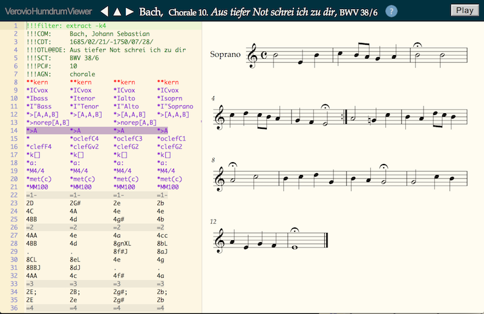
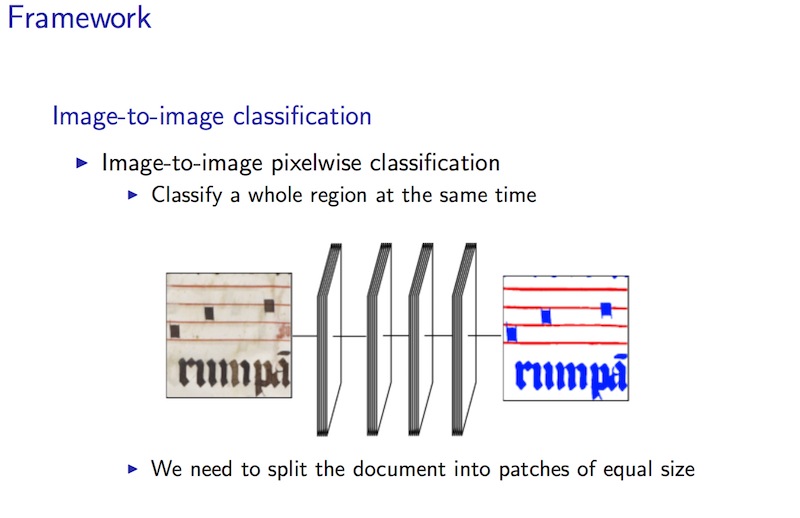
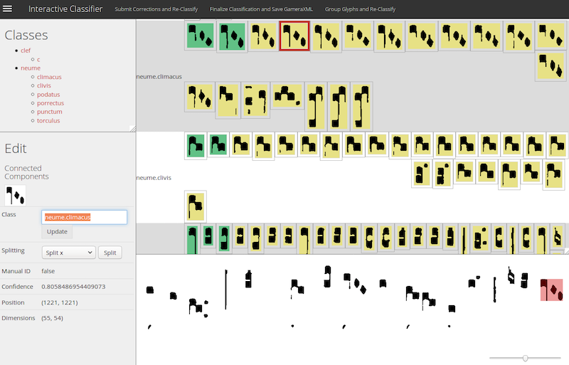
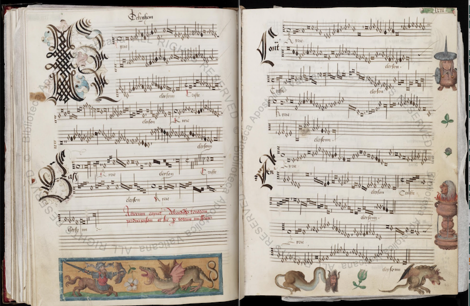
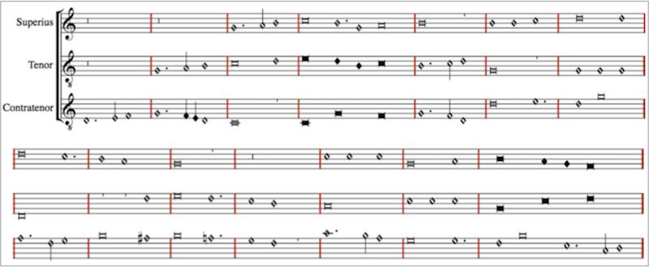

Building the OMR Workflow: Workshop on SIMSSA XII
Posted by ehopkins on August 17, 2017
On August 7, 2017, we held the twelfth workshop on SIMSSA at the Schulich School of Music here in Montreal. Many of our SIMSSA Community members were in town for DH2017 so it was a great opportunity to share what everyone’s been working on, including the progress from our DDMAL summer development team.
We started the morning with an introduction to the SIMSSA Project from Prof. Ichiro Fujinaga, who also introduced our keynote, SIMSSA Collaborator Craig Sapp. Craig gave a keynote introducing the Verovio-Humdrum Viewer. This online viewer allows users to edit a kern or MEI file and see changes in the score in real time, as well as other features demonstrated in his slides here. Below, the top voice of a Bach chorale is extracted for study in the viewer:

Then, we had two more featured speakers. Andrew Hankinson, former SIMSSA postdoc and newly official SIMSSA Collaborator, now working for new SIMSSA Partner the Bodleian Libraries, gave a talk on Building the New DIAMM: Linking and Sharing Data for Medieval Musicology. Alex Morgan, former SIMSSA researcher and now a postdoc at the L’université libre de Bruxelles, gave us a presentation on Cross-Platform Analysis: Combining Music Analysis Programs. Check out his slides here.
The next section of the workshop featured presentations from two of our postdocs and our summer DDMAL development team, working on different parts of the Optical Music Recognition (OMR) workflow that is key to SIMSSA’s ability to use digital images of scores for search and analysis.
First, SIMSSA Postdoc Gabriel Vigliensoni gave us an overview of the whole OMR process, outlining how the different components fit together. Next up, Jorge Calvo-Zaragoza (SIMSSA Postdoc, most recently from the University of Alicante) presented his most recent work in OMR and document analysis. He highlighted his pixelwise and image-to-image classification methods (see image below) and what that means for our processes. You can see his whole presentation here.

The next three presentations came from our pairs of developers working on different OMR applications this summer. First, Ké Zhang and Zeyad Saleh presented their work on Pixel.js. This web-based application can be used in the creation and correction of ground-truth images for training the OMR process. Check out their presentation here.
Next, we heard from Sacha Perry-Fagant, presenting on behalf of her team including Alex Daigle. They worked on Rodan and the Interactive Classifier. This web-based application allows human users to insert themselves in the OMR process. The workflow outputs a set of classified glyphs, which can then be expanded or corrected by a human user and re-entered into the workflow to process more music, allowing us to train our classifier as we go. Below, you can see a screenshot – the human-identified neumes are in green, and those the computer has classified are yellow. Check out their slides here.

The next step in the OMR process is pitch-finding, after which an MEI file is generated. However, there are usually still inaccuracies at this stage. Neon.js is designed to make the correction process fast and simple, with a visual interface that allows for corrections to the MEI file in real time. Designed for square notation, this latest version of Neon draws on early work from Greg Burlet and Alastair Porter, and will soon integrate with Verovio. You can view their slides here.
Finally, the music search: David Garfinkle demonstrated his latest work on implementing music searching algorithms using music21. In PatternFinder: Content-based music retrieval with music21, David introduced seven algorithms for different kinds of content-based music retrieval, and demonstrated how he’s implemented them.
In the last section of the presentation, we heard about some more analysis-oriented projects. Yaolong Ju presented his work on using machine learning for harmonic analysis for Bach chorales in Non-chord Tone Identification.
In Using statistical extraction and machine learning in music research, Cory McKay discussed the concept of “features” from a machine learning perspective, gave some updates on jSymbolic2, and presented a composer attribution study looking at Josquin, Ockeghem, and LaRue.
Cory also presented Claire Arthur’s latest research on her behalf, as she was presenting at the Society for Music Perception and Cognition Conference at the same time. Claire’s paper, Renaissance Counterport in Theory and Practise: a Case Study, focussed on examining the relationship between Renaissance harmonic treatises and Renaissance harmonic practise, looking specifically at the treatment of direct octaves and fifths.
Finally, Martha Thomae presented her Automatic Scoring-Up Tool for Mensural Music, focussing on the work of her master’s thesis. This tool can take a partbook in mensural notation, with each voice in a separate part of the page:

And transform it into a score that’s much easier to read, study, and perform from. Here it’s shown rendered in Verovio:

This task involves going beyond simply transcribing all the parts together on a modern staff – unlike the common music notation developed later on, many of the rhythmic values in mensural music are context-dependent.
The workshop was a great way to round out a busy summer in the lab, and we’re looking forward to seeing what the new school year has in store for SIMSSA!